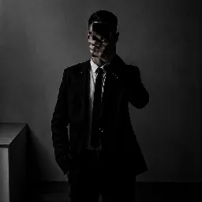

Siete
Sieťové základy zo školy a Cisco Networking Academy si overujem na vlastnej infraštruktúre — adresovanie, smerovanie a DNS nie sú teória, keď od nich závisí, či je server dostupný.
Prevádzka Minecraft serverov, vývoj pluginov a módov, vlastná infraštruktúra.

01 — O mne
Šesť rokov spravujem Minecraft servery — od konfigurácie a výkonu až po vlastné pluginy tam, kde hotové riešenie nestačilo. Posledný rok k tomu pribudol Kotlin, backend a vlastný server, na ktorom to celé beží.
02 — Projekty
Pluginy pre Paper, klientské módy pre Fabric, jedna Android aplikácia a backend k nej. Väčšina vznikla preto, že som na daný problém nenašiel riešenie, ktoré by robilo presne to, čo som potreboval.
03 — Minecraft
Začalo to jedným serverom v roku 2020. Odvtedy prešlo cez pozície developera aj co-ownera, cez proxy siete, databázy a zálohovanie — a nakoniec cez vlastný projekt postavený od nuly.
04 — Infraštruktúra
Vlastný VPS s Ubuntu, na ňom Docker a reverzná proxy, ktorá rozdeľuje prevádzku medzi navzájom oddelené služby. Postavené a spravované celé mnou, vrátane certifikátov, záloh a prístupov.
05 — Siete a Škola
Sieťové základy zo školy a Cisco Networking Academy si overujem na vlastnej infraštruktúre — adresovanie, smerovanie a DNS nie sú teória, keď od nich závisí, či je server dostupný.
Študujem Informačné a sieťové technológie na SPŠE Zochova v Bratislave. Škola dáva základ v elektrotechnike, sieťach a programovaní; zvyšok dopĺňam vlastnými projektmi.
06 — AI spoločníci
Nerobím na tom sám. Tri modely mi kryjú tri rôzne časti práce — každý tam, kde mi reálne šetrí čas. Rozhodnutia a výsledná podoba zostávajú na mne.